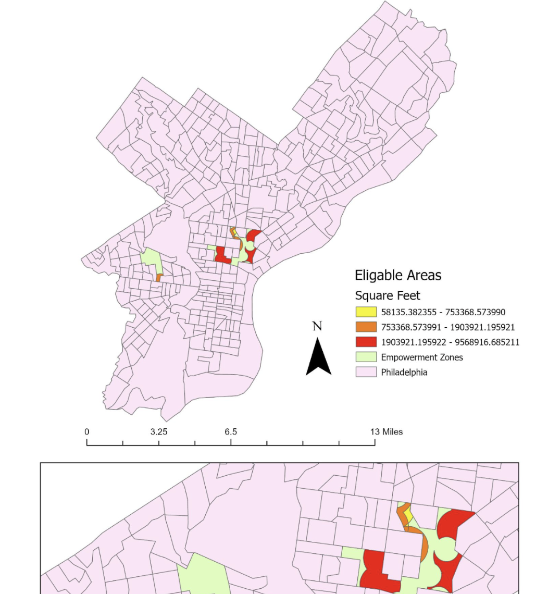
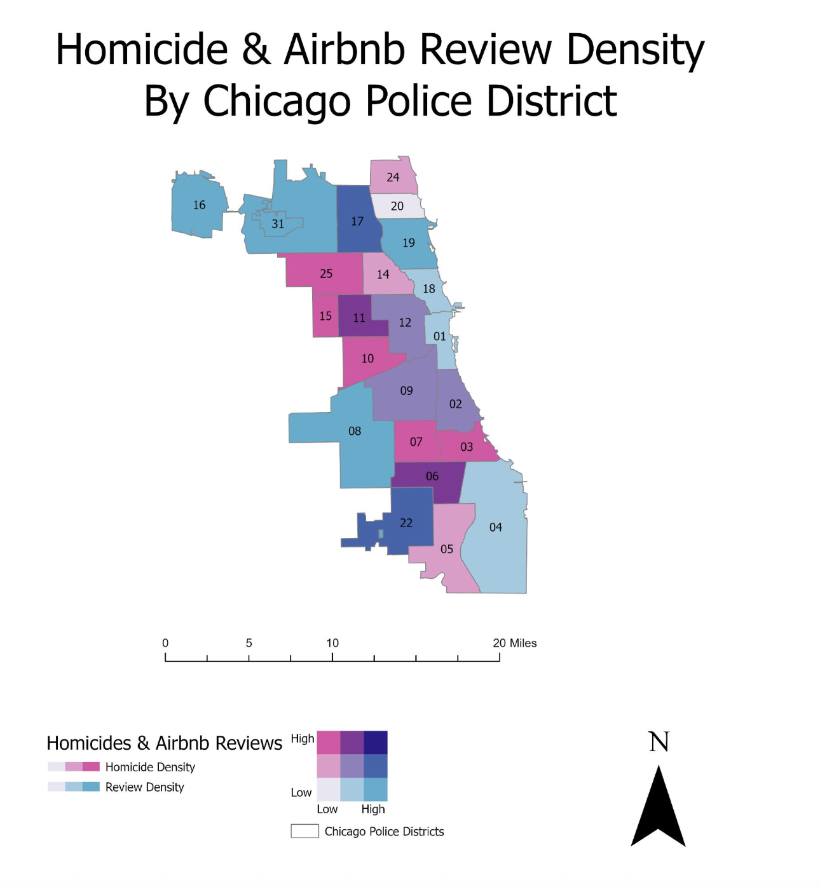
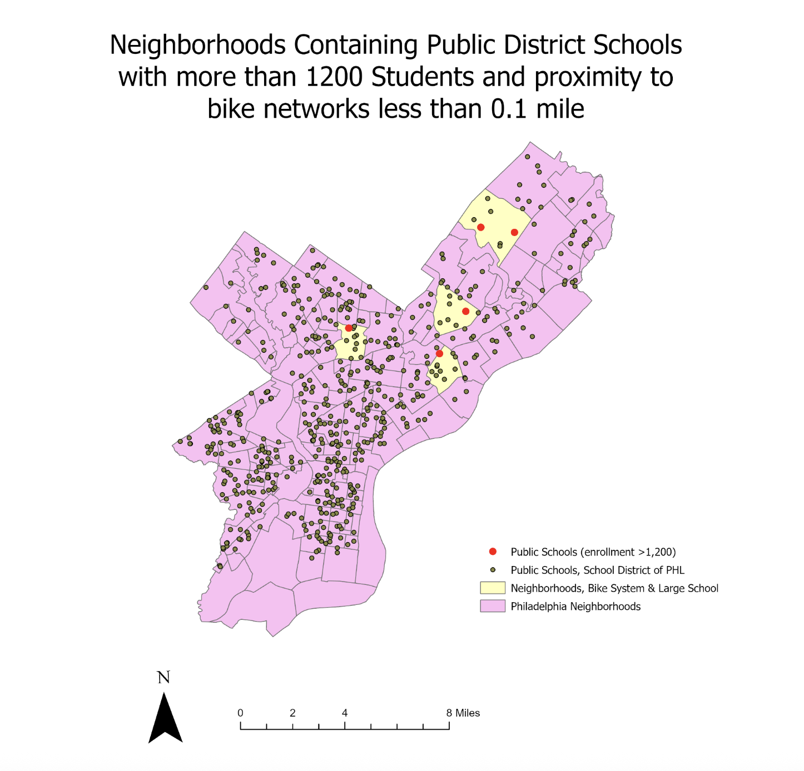

Many areas in Philadelphia are considered food deserts, where there is limited access to affordable, fresh, and healthy food options (Food Empowerment Project). Food access is also linked to other socioeconomic predictors, such as school performance and poverty. Therefore, the City of Philadelphia should consider allocating grants to businesses that open healthy food stores within those areas.
Eligible areas were those within 2000 feet of a subway station or regional rail station, and are not within 1200 feet of a farmers market location or a Healthy Corner Store Initiative location. Stores for this project may be eligible for additional funding if they are located in Empowerment Zones as well. Access to quality grocery stores is essential for the residents of Philadelphia. Therefore, the city of Philadelphia should consider supporting a healthy foods store in North Central Philadelphia, as the area meets the previously mentioned qualifications and can be defined as a food desert. People living in food deserts often travel further distances and spend larger portions of their income on limited low quality food. Now, Residents in this area would travel smaller distances for healthier food options.
Required Skills: Buffer, dissolve, union, intersect, erase, multipart to singlepart, and area calculation

Indicators of Economic Activity in Chicago: Homicides & Tourism
Eligible areas were those within 2000 feet of a subway station or regional rail station, and are not within 1200 feet of a farmers market location or a Healthy Corner Store Initiative location. Stores for this project may be eligible for additional funding if they are located in Empowerment Zones as well. Access to quality grocery stores is essential for the residents of Philadelphia. Therefore, the city of Philadelphia should consider supporting a healthy foods store in North Central Philadelphia, as the area meets the previously mentioned qualifications and can be defined as a food desert. People living in food deserts often travel further distances and spend larger portions of their income on limited low quality food. Now, Residents in this area would travel smaller distances for healthier food options.
Addressing crime in Chicago is critical for decreasing poverty, improving quality of life, and improving economic development. Yet, many factors influence crime, including disparities within economic opportunities, education, and systemic issues. Misperceptions of causes and effects of crime can be harmful. Therefore, a city should not be judged solely based on crime rates, although it should be considered. If police districts have high density of homicides and low Airbnb reviews, this may indicate that homicide rates are associated with a decrease in tourism. The map shows a relationship between higher homicide and less Airbnb reviews, suggesting a possibility of less tourist attractions, economic corridors, or short term housing options. Many areas, marked in blue, also have higher review quantities while maintaining low homicide rates. A stronger understanding of crime in Chicago may assist policy makers in guiding more effective policy to improve the quality of life for the residents.
Required Skills: data cleaning, sorting, and projection correction, Select by Attribute, Summary Tables, Joins and Relates, Calculate Area, and the Field Calculator

Students within Philadelphia rely on many forms of transportation, yet as costs of transportation increase and additional schools close, therefore it is useful to the School District, residents, and policymakers to understand the relationship between school zones and bike systems. Many students in Philadelphia rely on bike networks to get to school, but many large schools may be without safe, well-connected bike networks that ensure a consistent bike path from schools. Areas that do not have well connected bike systems also consist of long and inconvenient detours, safety hazards, fragmented bike lanes, and more. In order to highlight which areas may benefit from additional bike networks, larger schools were targeted as more students may benefit. Within this data set representing different types of schools in Philadelphia, there are 550 schools, of which 222 are public district schools. Of these schools, ten have enrollment higher than 1,200 students. Of these ten schools, only five are within 0.1 miles of a bike network. Overall, there are very few neighborhoods citywide with schools that have high enrollment and access to bike networks
Required Skills: Select By Location, Select by Attribute, Aesthetic Utilization, Cholorpleth Map.
